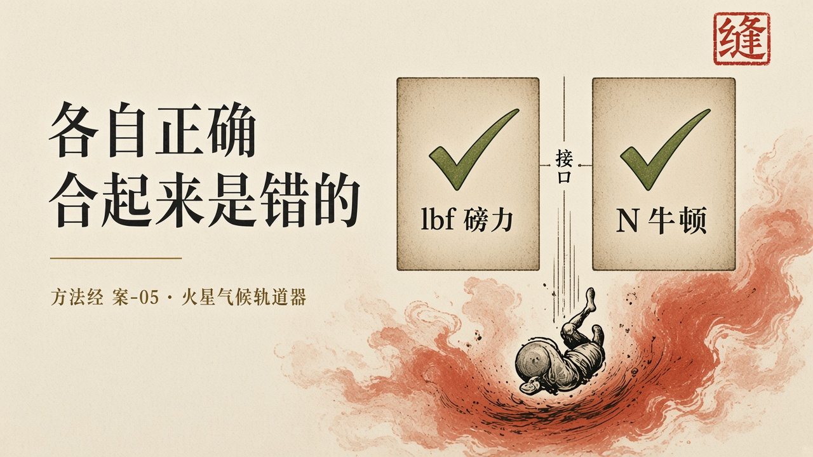

经过
1999 年 9 月 23 日，火星气候轨道器在发射九个月后失联，调查认定它在火星大气中烧毁。故障不是来自某个写错的算法，而来自接口契约失配。一个名为 Small Forces 的软件文件中，推力数据本应以牛·秒（N·s）表示，却以磅力·秒（lbf·s）给出。地面软件使用英制，星上软件使用公制。两边各自完成了自己的工作。因为 1 磅力约等于 4.44822 牛，导航计算把实际施加的冲量严重低估。累积偏差使进入火星大气的高度远低于预期，最终解体。成本口径必须分开写：轨道器本体约 8,700 万美元，整个任务全生命周期约 3.27 亿美元。NASA 安全通报将其定性为验证与确认的失败。
一个系统由多个组件组成。每个组件都可以有自己的规范、自己的验证、自己的「正确性」。当这些组件通过接口连接时，接口本身成为正确性传递的通道。上游提供的保证（推力值，单位为磅力·秒）与下游依赖的假设（推力值，单位为牛·秒）之间存在缺口，而这个缺口在两个独立的论证中都不可见。两边都可以「通过了测试」。合起来把轨道器送进了大气层。契约若只是文档，审查可以开完，语义仍各说各话。契约必须是可以机械检查的对象。

剖析
对齐是这一案的主关节。写下的、编出的、跑着的、世界上发生的，在各自模块内部可以对齐。越过接缝，语义已经不是同一件事。地面软件交出一份它按磅力·秒算对的推力。星上软件按牛·秒接收同一组数字。导航把实际冲量低估了约 4.45 倍。局部测试全部绿灯。系统测试如果只问「数据有没有传过去」，也会绿灯。绿灯覆盖的是通道，不是语义。缺口在两边各自的论证里都看不见。
定义上，托付是把轨道器送入被设计的火星轨道。禁区是不得按错误的力执行制动。禁区写在两个团队各自的单位习惯里，没有写在那一次数据交接必经的检查上。能力很强：两边都能算出、都能传、都能执行。禁区弱于能力。
达成若等于「两个子系统都交付了」，项目达成了。轨道器失踪那天，各自的里程碑早已签字。验收即结束。合同买的是两个能用的软件包，不是一份跨组件的行为论证。可组合性被当成集成测试的副产品，而不是一条必须被证明的性质。
接口契约必须进入使命绑定。契约不是文档对齐，是同一套可被机器检查的语义：单位、量纲、坐标系、时间基准、正负号、精度与有效范围。少了这一层，形式化方法在模块内越强，接缝上的错误越像「已经证明过了」。证明过的是局部。局部正确可以成为系统错误的掩护。
人的位置被拆到两个组织。立法在任务级是清楚的。划界落在两个团队的接口文档上，文档没有牙齿。审判没有一个独立位置有权说：两边单位不一致，这次交接不得进入飞控。把审查写成会议，把契约写成附件，等于没有划界。
它也钉住方法里「对齐」不能被理解成三张检查单。填完「规范一致」「代码符合规范」「测试通过」三张表，这一案仍然会发生。三张表可以各自为真。接缝上没有第四张不可绕过的检查：这一次交接的语义是否仍是同一件事。